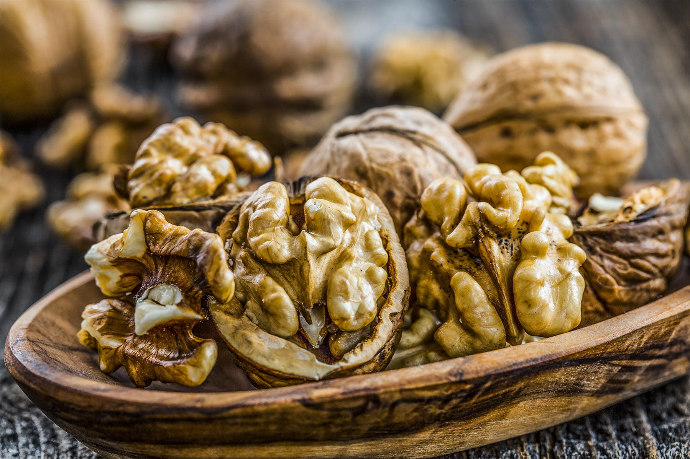
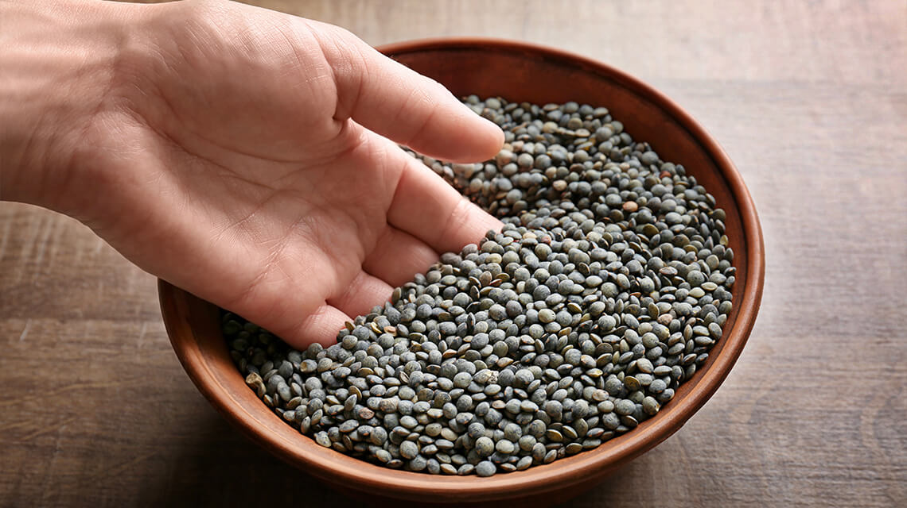
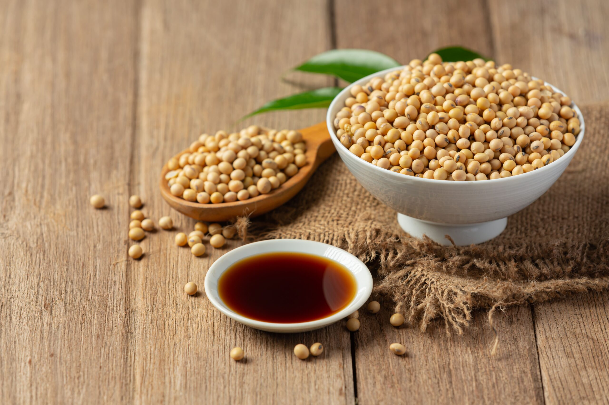

Le arachidi sono legumi, non frutta secca!
Molti pensano che le arachidi siano frutta secca come noci o mandorle, ma in realtà appartengono alla famiglia dei legumi. Crescono sottoterra e hanno un profilo nutrizionale simile ai fagioli. Sono una fonte eccellente di proteine, grassi buoni e fibre. Un vero "legume travestito"!

Le lenticchie sono tra i primi cibi coltivati dall'uomo
Le lenticchie erano presenti già 7000 anni fa nel bacino del Mediterraneo. Nell'antico Egitto venivano offerte agli dei e considerate un cibo sacro. Ancora oggi, mangiarle a Capodanno è simbolo di abbondanza e prosperità. Sono piccole, ma ricche di ferro e proteine!

La soia: il re dei legumi proteici
La soia è l'unico legume a contenere tutti gli amminoacidi essenziali, rendendola una proteina completa. È alla base di prodotti come tofu, tempeh e latte di soia. In Asia è coltivata da oltre 3000 anni e oggi è fondamentale per chi segue una dieta vegetale.